Where Computational Life Science Meets People
📍 Upcoming Meetup
Bioinformatics Community Meetup #5 takes place on 11 July 2026 at Klaster Innowacji Społeczno-Gospodarczych Zabłocie 20.22.
The full program and speaker lineup will be published soon. Check back here for updates.
📝 Participant Registration Form
Attendee registration for Meetup #5 is now open. Reserve your spot and join the community in Krakow on July 11th, 2026.
Register as a Participant🗓️ Preliminary Agenda
Speakers

Marcin Stępień
👨🔬 About the speaker: Marcin Stępień is a Staff Software Engineer at Fluxon and an independent software vendor operating through smart.biz.pl since 2005. With over 20 years of experience in software engineering, he has spent more than a decade specializing in Clinical Data solutions for major pharmaceutical companies. Beyond his professional work, Marcin is a community facilitator for the Complexity Explorers Kraków (https://lnkd.in/drADjsjh ) group, engaging in analytical philosophy to explore the limits of understanding and computation. In his talk, 𝗔𝗿𝗰𝗵𝗶𝘁𝗲𝗰𝘁𝘂𝗿𝗮𝗹 𝗧𝗿𝗮𝗱𝗲𝗼𝗳𝗳𝘀 𝗳𝗼𝗿 𝗖𝗹𝗶𝗻𝗶𝗰𝗮𝗹 𝗧𝗿𝗶𝗮𝗹𝘀 𝗗𝗮𝘁𝗮, Marcin Stępień will examine the design tradeoffs in modern data systems, analyzing how structural choices impact a platform's ability to adapt to new therapeutic areas. The evolution of Data Pipeline Architectures, moving from ETL batches to event-driven meshes enabled real-time monitoring and analytics but introduced significant overhead in terms of observability and data validation. This progression, from MapReduce to the modern Data Lakehouse, is now being followed by a further architectural shift prompted by the adoption of Large Language Models and related technologies. For data interoperability in large data ecosystems, solutions like Ontobroker served as the central semantic middleware in clinical trials, using formal logic and inference engines to broker queries across heterogeneous databases by mapping them to a unified clinical ontology. Over the last years, its role has transitioned from a rigid, rule-based reasoning engine to an LLM-augmented broker that automates the previously manual and labor-intensive task of semantic term reconciliation and ontology alignment. The emergence of Retrieval-Augmented Generation (RAG) and vector search compels architects to re-evaluate the balance between industry-standardized solutions and bespoke in-house approaches for gaining a competitive edge by delivering valuable insights.

Milena Di Vittorio
🔬 About the speaker: Milena Di Vittorio is an independent Italian researcher and biotech innovator specializing in the computational architecture of targeted drug delivery systems. Her research combines nanotechnology and bioinformatics, with molecular modeling at its core, aimed at enhancing the DARS (Drug Apatite Release System). By integrating principles of protein crystallization, DNA molecular structure analysis, and voltage-gate system simulations, she develops "patent pending" nanorobotic frameworks designed for precision medicine. Her technical approach involves the study of molecular docking and CD44-targeting ligands, utilizing bioinformatic insights to enhance the delivery of therapeutics in pulmonary and oncological contexts. Milena’s work has been recognized at international scientific forums, including FAST "I giovani e le scienze" in Milan and the Elhuyar Zientzia Azoka in Bilbao, where she presented her data-driven models for nanomedicine. Her research has attracted the attention of leading European clinical centers and institutes like CIC biomaGUNE. In her talk, 𝗖𝗼𝗺𝗽𝘂𝘁𝗮𝘁𝗶𝗼𝗻𝗮𝗹 𝗠𝗼𝗱𝗲𝗹𝗶𝗻𝗴 𝗼𝗳 𝗗𝗔𝗥𝗦: 𝗔 𝗕𝗶𝗼𝗶𝗻𝗳𝗼𝗿𝗺𝗮𝘁𝗶𝗰 𝗔𝗽𝗽𝗿𝗼𝗮𝗰𝗵 𝘁𝗼 𝗧𝗮𝗿𝗴𝗲𝘁𝗲𝗱 𝗡𝗮𝗻𝗼-𝗗𝗿𝘂𝗴 𝗗𝗲𝗹𝗶𝘃𝗲𝗿𝘆, Milena will present the computational foundations of DARS and discuss how bioinformatic methods can support the design of targeted drug delivery systems. The presentation will explore the use of molecular docking, ligand-receptor interaction modeling, and high-throughput biological data analysis to improve the specificity of therapeutic delivery. She will place particular focus on CD44-targeting strategies, computational simulations of biological microenvironments, and the role of electrochemical modeling in predicting controlled drug release. Milena will also discuss how algorithmic approaches can be used to model interactions between nanomaterials and biological systems, helping researchers evaluate potential delivery strategies before moving to experimental testing.
🌌 Panel Discussion
𝗥𝗲𝗽𝗿𝗼𝗱𝘂𝗰𝗶𝗯𝗹𝗲 𝗕𝗶𝗼𝗶𝗻𝗳𝗼𝗿𝗺𝗮𝘁𝗶𝗰𝘀 𝗥𝗲𝘀𝗲𝗮𝗿𝗰𝗵 𝗙𝗿𝗼𝗺 𝗔𝗰𝗮𝗱𝗲𝗺𝗶𝗮 𝘁𝗼 𝗜𝗻𝗱𝘂𝘀𝘁𝗿𝘆
Our Panel Discussion will dig into how bioinformatics research is published and consumed. From spotting logical fallacies and statistical misuse in papers, to what proper code and data sharing actually looks like in practice, to the real costs companies pay when they build on shaky science. The panel is curated by PaperQC.

👩💻 Panel Host: Konstancja Gałat
𝗣𝗮𝗽𝗲𝗿 𝗤𝗖 co-creator, bioinformatician, and PhD researcher at the International Institute of Molecular and Cell Biology in Warsaw. Leading the panel is Konstancja Gałat, 𝗣𝗮𝗽𝗲𝗿 𝗤𝗖 co-creator, bioinformatician, and PhD researcher at the International Institute of Molecular and Cell Biology in Warsaw. Konstancja graduated from Jagiellonian University with a BSc in Biotechnology, followed by an MSc in Molecular Biotechnology, during which she collaborated with Łabaj's Lab at the Małopolska Centre of Biotechnology UJ as a bioinformatician. She also completed an internship at Eligo Bioscience in Paris. With a strong background in biotechnology, her current work focuses on applying bioinformatics techniques to study the gut-liver axis.

👩🔬 Panelist: Agnieszka Konkolewska
Senior Bioinformatics Technical Service Scientist at QIAGEN Agnieszka holds a PhD in Molecular Biotechnology from Adam Mickiewicz University in Poznań, Poland, where her doctoral research focused on plant responses to trace metals, including zinc, cadmium, and lead uptake, transport, and detoxification. She later moved toward applied bioinformatics, data analytics, and computational approaches to agricultural and life science questions. In Ireland, she worked with UCD Professional Academy, Teagasc, VistaMilk Research Ireland Centre, and the Insight Research Ireland Centre for Data Analytics, contributing to research on sustainable agriculture, pasture improvement, forage quality, genomic prediction, and data-driven decision support. Her work has included connecting biological data with statistical and machine-learning methods, as well as developing and evaluating calibrations using near-infrared spectroscopy (NIRS) for practical biological and agricultural applications. Agnieszka has recently joined QIAGEN, where she continues to work at the intersection of life science, data, and technology. She is especially interested in making complex biological data more interpretable, useful, and connected to real-world scientific questions.

👨🔬 Panelist: Michał Burdukiewicz
Head of the Laboratory of Bioinformatics and Multi-omics Analysis at the Medical University of Bialystok and Senior Researcher at Vilniaus universitetas / Vilnius UniversityMichał Burdukiewicz is a bioinformatician working at the intersection of machine learning, multi-omics, and reproducible computational biology. His research focuses on the development and evaluation of predictive models for biological data, with particular emphasis on fair and FAIR benchmarking, model generalization, and the reliability of AI-driven decision systems in bioinformatics. His contributions include AmpGram, an n-gram-based predictor of antimicrobial peptides, and a body of work examining how biased benchmark design can distort the apparent performance of peptide prediction tools. To support more reliable benchmarking, his work also includes the development and curation of biological databases that provide well-structured and reusable datasets for model evaluation. Alongside his methodological work, he develops open and user-friendly omics software, including tools from the HaDeX ecosystem (biogenies.info) for hydrogen-deuterium exchange mass spectrometry analysis. His broader goal is to make computational biology more transparent, comparable, and reproducible.

👩💻 Panelist: Wiktoria Wilman
Bioinformatics Scientist ConsultantWiktoria Wilman is a Bioinformatics Scientist Consultant with 5 years of industry experience, helping clients navigate complex bioinformatics analyses. Alongside her consulting work, she lectures in Bioinformatics at Polish-Japanese Academy of Information Technology (PJATK) and is a co-author of scientific publications in machine learning applied to antibody research. She has also been recognized as one of Poland's Top 100 Women in Data Science by Perspektywy Women in Tech, a well-deserved acknowledgment of her contributions to the field. But Wiktoria's impact goes well beyond her professional work. Known online as Biokoderka, she runs one of Poland's most recognized social media channels dedicated to bioinformatics that reaches hundreds of students and demystifies topics like machine learning and career paths in computational biology. Her mission is to be the "big sister" in a field that's still finding its footing in Poland so that no talented young scientist feels alone in this space.

👩🔬 Panelist: Agata Kalita
EMBO Postdoctoral FellowAgata Kalita is a molecular biologist and EMBO Postdoctoral Fellow working at the intersection of comparative genomics and epigenetics, with a particular interest in the evolution of sex chromosomes and dosage compensation. She is currently a postdoctoral researcher at Jagiellonian University, after completing her PhD at the Institute of Molecular Biology (IMB), Germany and earlier working at the University of Virginia, USA. In recognition of her research, she has received an EMBO Postdoctoral Fellowship, a Boehringer Ingelheim Fonds PhD Fellowship, and the 2025 Elisabeth Gateff Prize. She came to bioinformatics as a molecular biologist, learning it out of necessity and curiosity in order to explore her own datasets in depth and make better use of published data. Her work focuses on non-model insects, adding a layer of complexity often overlooked in bioinformatics: a lot of current tools are validated on data-rich model species, and they can fail to perform when applied elsewhere.
Our Sponsors
We thank our amazing sponsors for supporting the Bioinformatics Community Meetup #5.
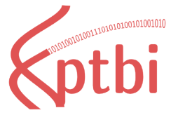
FAQ
Yes, but registration is required. Register here
Not at all! The meetup is open to everyone — students, researchers, industry professionals, and anyone curious about bioinformatics.
We plan to share recordings with attendees after the event.
Talks will be in English, but during informal networking, all languages are welcome!
Yes, KMS will open its parking to all participants.
The social part will be at Kawiory Food Truck Park | Kraków.
Just yourself and your curiosity! A laptop is optional but might be useful for networking. If you want, bring over your resume and/or business cards!
For this edition, the speaker lineup is complete. However, reach out if you'd like to present at future meetups!
About us

Agata Szymanek
The key figure behind our community. In 2024, she had an idea: what if bioinformaticians actually got together, talked shop, and shared what they're working on? That idea turned into our BCPL Meet-ups, and here we are.After graduating from The Silesian University of Technology and Cranfield University, Agata has gained experience in the field of cancer research and microbiome studies, and now she is working at Perseus Biomics and cooperating with Łabaj lab at Małopolska Centre of Biotechnology UJ. She strives to connect her interest in applied bioinformatics for human health and therapies development with her background in innovation project management.When she's not doing all of the above, you'll find her dancing or somewhere new in the world. Both of which, she'll tell you, make her better at everything else.
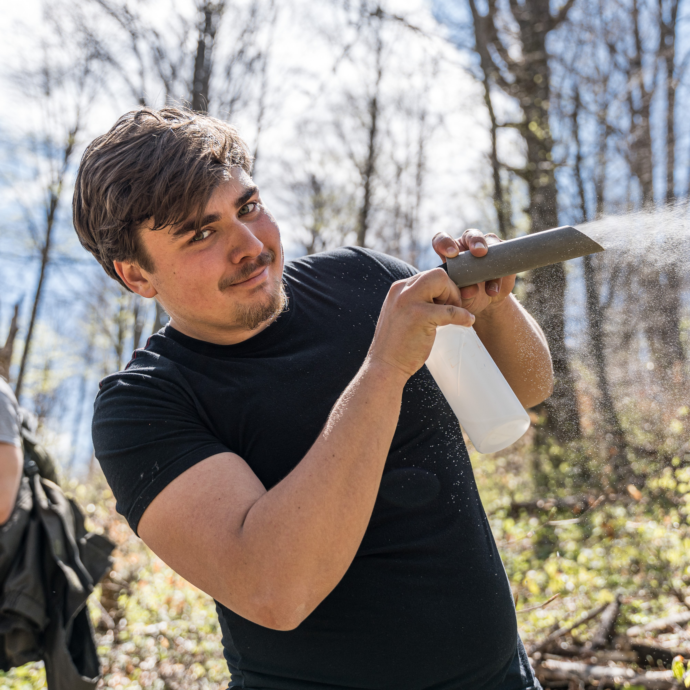
Mikołaj Mieszko Charchuta
Our Co-organizer and Event Host. He is the one caring about the participant experience and is the face of our meet-ups, while also keeping our website in shape.Professionally, he works as a bioinformatician at the Department of Microbiology, Uniwersytet im. Adama Mickiewicza w Poznaniu, with a particular passion for multi-omic projects (the more unconventional, the “-omic”, the better!)Beyond that, he is a beekeeper, mycologist and a fan of field biology as a “dirty-lab” alternative to the typical wetlab/drylab divide. He also cycles to work and beyond, which probably explains the amount of energy he brings to everything he does.
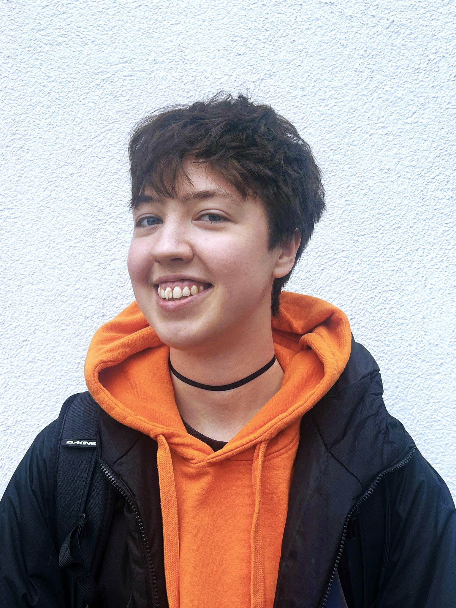
Kaja Łucka
Our Partnerships & Online Community Coordinator! Kaja is the one who keeps our partnerships running smoothly. Managing communication with sponsors, speakers, and panelists, as well as tracking the event budget, and moderating our Discord server is their bread and butter. Privately, Kaja is a bioinformatics Master’s student at Jagiellonian University and Vice-President of Koło Zastosowań Matematyki UJ, while also working as a Process Optimisation Specialist at onebiome Sp. z o.o., organising tasks and automating processes. Curiosity is what drives Kaja toward new challenges. Whether it’s diving into microbiology, starting new projects, or chilling out with science-fiction, cats, and the funniest memes the internet has to offer.
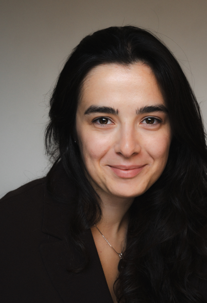
Zofia Seweryńska
Our Event Organiser! Zosia is the person helping to bring new initiatives to life. Always looking for new ways to push the community forward. Academically, she is finishing her Master’s degree in Control, Electronic and Information Engineering with a specialisation in Data Science at The Silesian University of Technology, with a deep admiration for biostatistics and deep learning applications in medicine. On the research side, she explores the application of computational methods in oncology by applying deep learning methods for glioma segmentation and biostatistics solutions for investigating radiogenomics markers for IDH classification. Her research path has led her through internships at both the Sano Centre for Computational Medicine and the Narodowy Instytut Onkologii w Gliwicach. Stagnation is simply not in her vocabulary. Zosia is someone who constantly seeks new challenges, whether it’s in her research or in personal life. Outside of science, she is a devoted animal lover who brings that same warmth and energy wherever she goes.
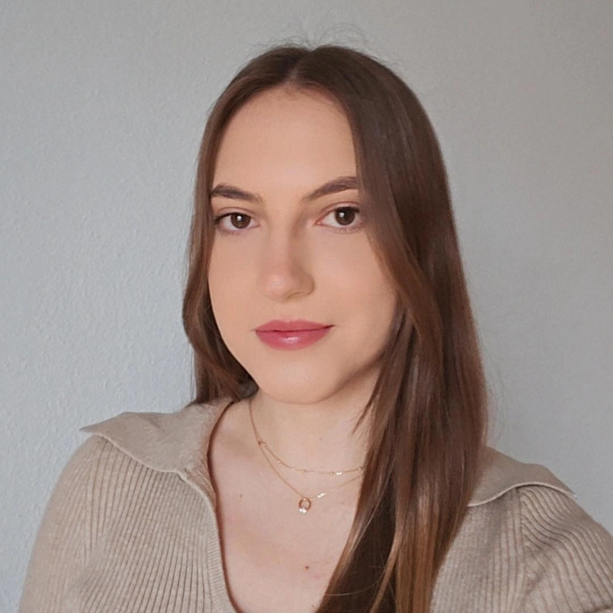
Amelia Kurasińska
Our Social Media Manager and Graphic Designer! Amelia is one of the first co-organisers of Bioinformatics Community PL. She has been a part of this community from the very beginning and continues to shape our social media.Recently, Amelia graduated from Bioinformatics at Jagiellonian University, now holding both a Bachelor's and Master's degree in the discipline. During her Master's, she served as Vice President of the Association of Bioinformatics Students KNSB In Silico and co-organised the Konferencja Naukowa BioMeeting 2025 Conference, proving that juggling science and community work is something she does naturally. Since 2023, she has been working at a biotech company, with scientific interests spanning protein structure determination and machine learning.Outside of work and community, Amelia keeps her creativity flowing through crafty hobbies and language learning.
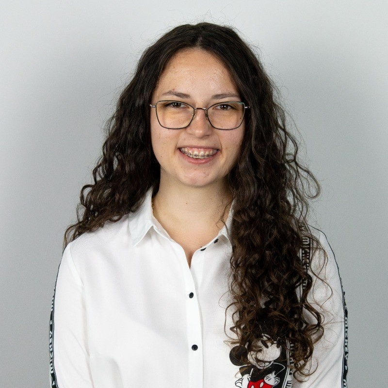
Ewa Radwan
Our Social Media Assistant and Graphic Designer! Ewa is a student at The Silesian University of Technology, currently finishing her Master's degree in Control, Electronic and Information Engineering with a specialisation in Data Science. Alongside her studies, she is Vice President of Promotion and Marketing at SKN Data Science, bringing her organisational and creative skills to the academic community as well.With a background in full-stack development at inSolutions, she has expanded her horizons into statistics and bioinformatics, exploring histopathology images and genomics. Ewa loves learning new things, whether in the world of science or beyond, and that curiosity knows no limits.Outside of studies, Ewa spends her time drawing, painting, and crocheting, keeping active with sailing and roller skating, and even singing in a choir.
🗓️ Agenda
Our Sponsors
We thank our amazing sponsors for supporting the Bioinformatics Community Meetup #5.
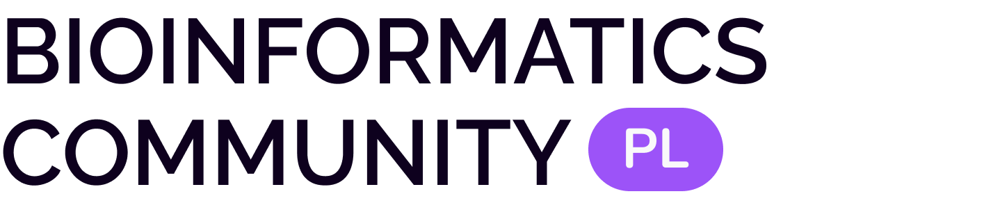
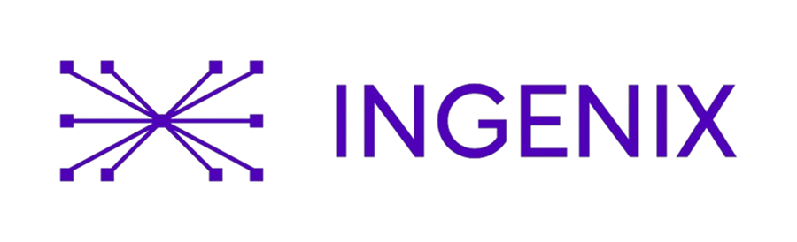
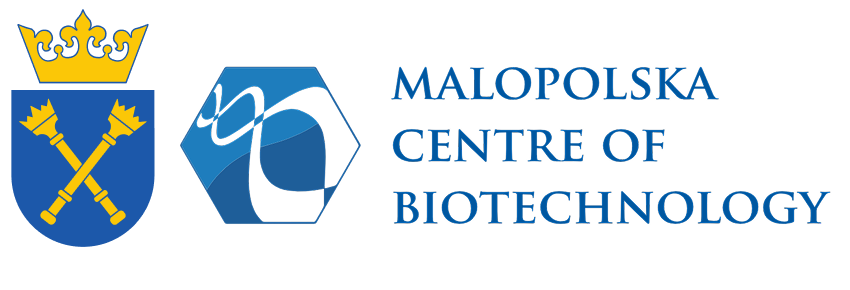
Speakers
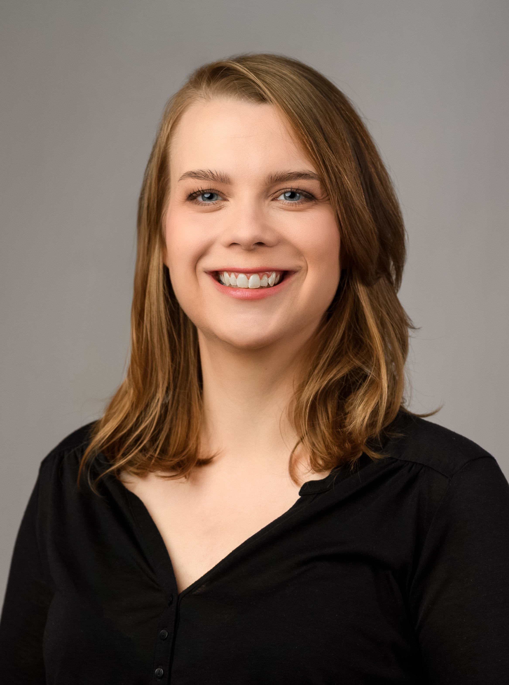
Aga Rasińska
👩🔬 About the speaker: With over a decade of experience in clinical analytics, bioinformatics, and digital transformation, Aga has led cross-functional initiatives across Europe and the U.S., bringing together data scientists, biostatisticians, and bioinformaticians to build data-driven solutions. She is an active advocate for open-source in pharma and passionate about breaking down silos between teams and tools.
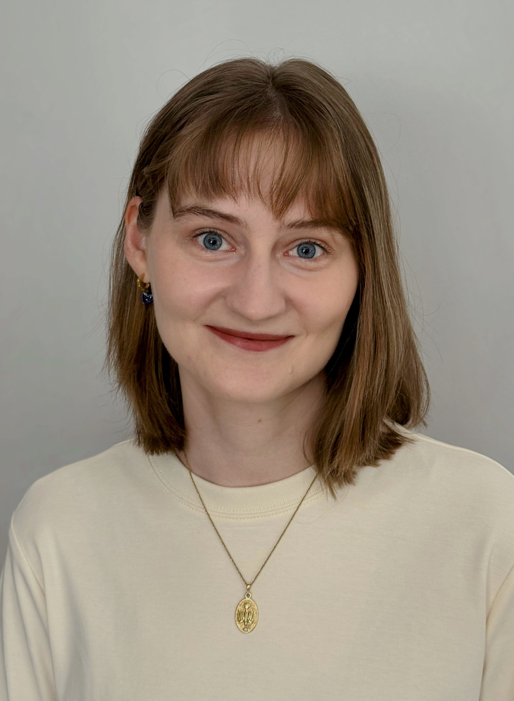
Joanna Krawczyk
👩🔬 About the speaker: Joanna Krawczyk holds degrees in Mathematics and Bioinformatics from the University of Warsaw. Before joining Ingenix.ai, she worked at Ryvu Therapeutics, supporting target discovery and biomarker development through CRISPR screening. As a researcher at the Ewa Szczurek Computational Medicine Lab, she studied the tumor immune microenvironment using spatial and single-cell transcriptomics in collaboration with the IMMUcan consortium.

Marc Pielies Avellí
👨🔬 About the speaker: Marc Pielies Avellí began his academic path in Physics at the University of Barcelona, later completing an MSc in Biophysics and Computational Biology at Lund University. He is currently in the final year of his PhD at the University of Copenhagen, in collaboration with the Broad Institute of MIT and Harvard.

Mateusz Sikora
👨🔬 About the speaker: Head of the #Dioscuri Centre for Modelling of Posttranslational Modifications at the Malopolska Centre of Biotechnology, Jagiellonian University. Former postdoctoral researcher at the Max Planck Institute for Biophysics (Frankfurt) and IST Austria; PhD from the Institute of Physics, Polish Academy of Sciences. His work focuses on molecular simulations and AI-driven biology, including the open-source GlycoSHIELD platform integrated with the Gaia AI Factory (ACC Cyfronet AGH).
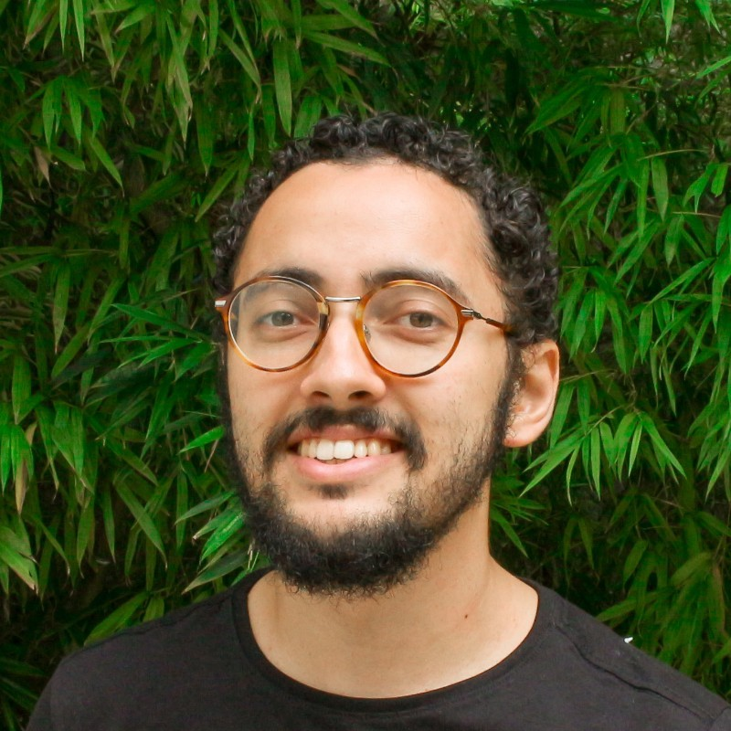
Diego Marques Coelho
👨🔬 About the speaker: Associate Director at Ryvu Therapeutics and Visiting Professor at UFRN. Previously at Mendelics and EMBL-EBI (Variant Effect Predictor). His research spans single-cell and bulk transcriptomics applied to autoimmune and neurodegenerative diseases, including large-scale hdWGCNA analyses.

Krzysztof A. Kowal
👨🔬 About the speaker: Assistant Professor at the University of Life Sciences in Lublin specializing in cancer genomics in dogs at the Sub-department of General and Molecular Genetics. Graduate in Forensic Biology and Biotechnology (ULSL) with a 2025 postgraduate diploma in Bioinformatics (PJATK). Member of the Polish Genetics Society (since 2020) and the Polish Bioinformatics Society (since 2024), creator of the "Bioinformatics in Bioeconomy" programme, and recipient of the Minister of Science Scholarship. Tool: canismitosnp.pl
🌌 Discussion Panel
Bioinformatics Beyond Earth: Challenges and Directions in Space Exploration
As humanity looks toward the Moon and Mars, bioinformatics is finding its place among the stars. This panel will explore how computational biology, space biotechnology, and AI-driven life sciences are shaping the future of space missions — from understanding biological responses to microgravity, to developing sustainable food systems and next-generation space medicine.
Format: 60-minute moderated discussion

👩🚀 Panel Host
Paweł P. Łabaj — Co-Founder & Co-CEO of onebiome / Deputy Director for Science at Małopolska Centre of Biotechnology UJ
Paweł is co-founder of Onebiome Sp. z o.o. Paweł focuses on developing advanced data-exploration methodologies and applying them to current biomedical challenges, with a strong emphasis on transcriptomics, metagenomics, and precision medicine. He plays a leading role in the SEQC consortium coordinated by the U.S. FDA, contributing to benchmarking large-scale gene-expression technologies and, in SEQC’s second phase, investigating how targeted RNA-Seq complements genomic sequencing in advanced cancer diagnostics. He is also a key member of the international MetaSUB Consortium, where he helps define analytical frameworks for environmental metagenomics to improve understanding of urban health, well-being, and forensic applications. Paweł co-develops the Gaia AI Factory consortium, contributing expertise in building digital twins of environmental microbiomes to support European AI infrastructure for public-health innovation and personalized medicine. As part of the global STOC Infection Working Group, he applies his spatiotemporal omics expertise to advance novel strategies for combating infectious diseases.
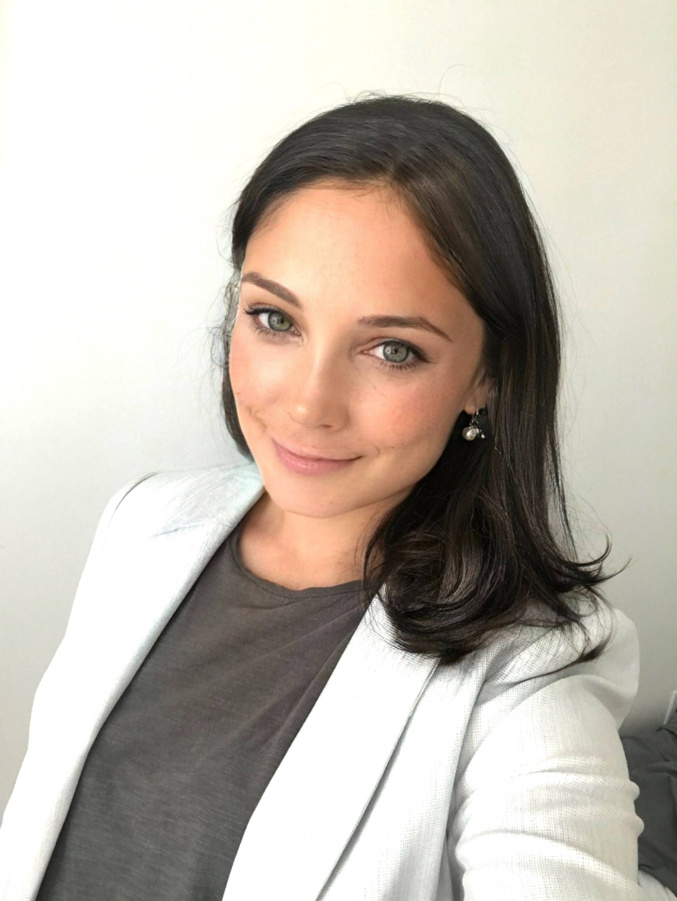
👨🚀 Panelist
Daniela Bezdan — Space Biotech Entrepreneur, Scientist
Daniela Bezdan is the CEO of dxOmics GmbH, an AI-driven precision genomics company integrating long-read sequencing and automated bioinformatics to deliver personalized medicine. With a background in biotechnology, she leads global initiatives at the intersection of genomics and space science as Chair and Founder of ISSOP (International Standards of Space Omics Procedures), Chair of the NASA GeneLab Microbe Working Group, ESA Topical Team and ESF panel member, and Ambassador of the XPRIZE Space Exploration Challenge. Author of 60 publications and 14 patents, she bridges science, technology, and entrepreneurship to advance genomics on Earth and in space.
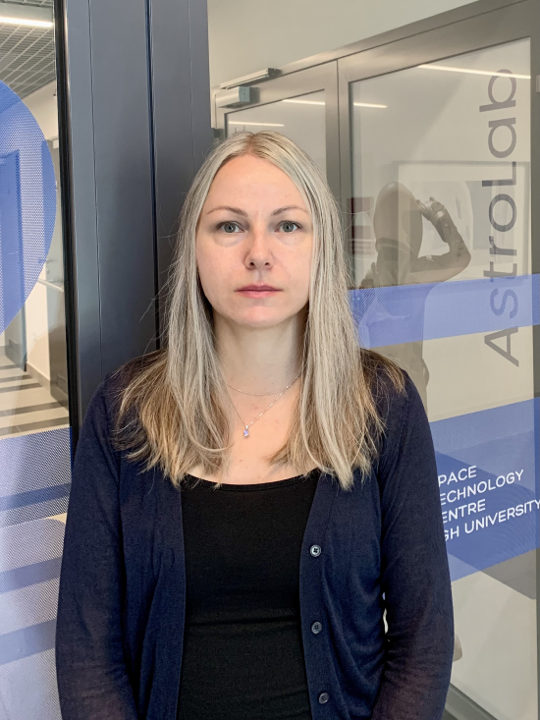
👩🚀 Panelist
Agata Rudolf — Research Adjunct at Space Technology Centre, AGH University of Science and Technology of Krakow
Dr. Agata leads the Space Biology and Astrobiology Laboratory at the Faculty of Space Engineering, AGH University of Krakow. A board member of the Polish Astrobiological Society and a member of NASA GeneLab, she studies how spaceflight conditions affect living organisms and how to mitigate these effects. Her research focuses on cellular energetics, including metabolism, oxidative stress, and spaceflight as a model of accelerated aging, with a particular emphasis on cosmic radiation. As a co-founder of the Space Adaptation and Evolution sub-AWG within NASA GeneLab. Agata investigates evolutionary processes in space environments. She also has extensive experience in linking genetic variability to phenotype and adaptation, and is integrating transcriptomics into upcoming space-biology projects.
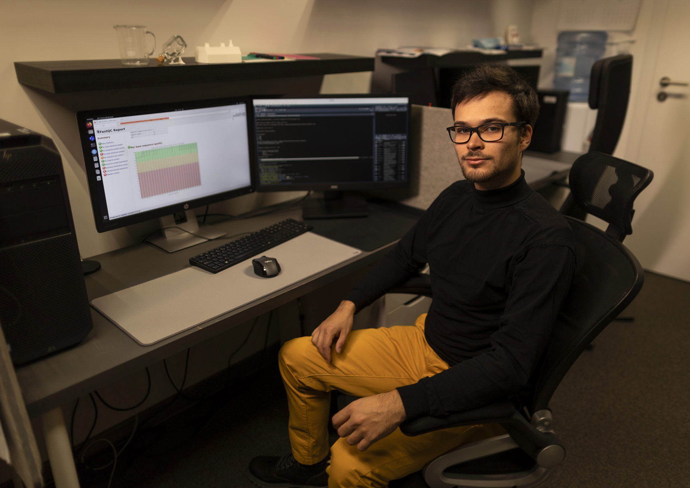
👨🚀 Panelist
Krystian Komenda — Bioinformatician & PhD Fellow at Uniwersytet Jagielloński w Krakowie
Krystian is a bioinformatician specializing in transcriptomics and a researcher actively engaged in the intersection of computational biology and space science. He's a lecturer, speaker, and expeditor of the first Analog Astronaut Training Center Arctic mission in Hornsund, and has participated as an astrobiologist in the lunar analog missions Eternity and EMMPol-1.
Want to suggest a question? Email us at bioinformatics.community.pl@gmail.com.
FAQ
Yes, but registration is required.
Not at all! The meetup is open to everyone — students, researchers, industry professionals, and anyone curious about bioinformatics.
We plan to share recordings with attendees after the event.
Talks will be in English, but during informal networking, all languages are welcome!
Unfortunately, there is no parking at the venue. We recommend using public transport — the best stop is "Kawiory".
The social part will be at Kawiory Food Truck Park | Kraków.
Just yourself and your curiosity! A laptop is optional but might be useful for networking.
For this edition, the speaker lineup is complete. However, reach out if you'd like to present at future meetups!